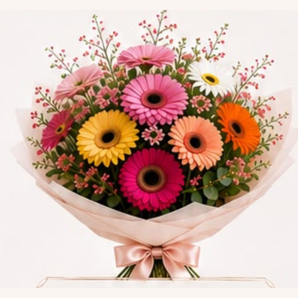
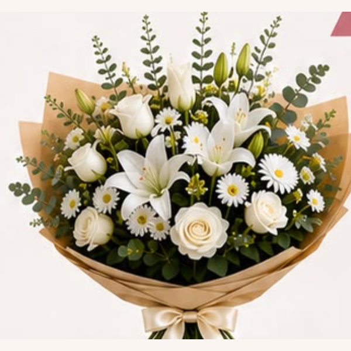

✦ תשפ"ז · הזמנות מראש 10-11/9
הפרחים יחזיקו שבועיים.
הרגע שבו נפתחה הדלת, שנה שלמה.
זר לראש השנה הוא הדבר הראשון שרואים כשנפתחת הדלת, והדבר שזוכרים אחרי שהצלחות נאספו. אצלי הוא לא נלקח מהמדף. הוא נולד מהשאלה: למי זה, ומה רוצים שירגישו?
להזמין זר לחג ←
{{ countdown }}


שישה כיוונים לחג
בוחרים כיוון.
את הזר עצמו אני שוזרת בשבילכם.
הזמנות מראש
10/9 – 11/9
♥
ניתן למצוא את הזרים גם ב־I LOVE EAT באשדוד, בערב חג 10/9
♥
{{ p.mark }}
{{ p.title }}
{{ p.text }}
🌸
הרגע
זר פרחים איננו רק פרחים.
הוא רגע.
השנייה שבה נפתחת הדלת בערב החג והעיניים נדלקות. הפרחים יימשכו שבוע, אולי שבועיים. הרגש יישאר. הרגע ייזכר לכל השנה.
אני אביבית, ואני יוצרת פרחים באשדוד. אצלי זה מתחיל בשאלה אחת: למי זה, ומה אתם רוצים שירגישו כשהם פותחים את הדלת?
ומשם נולד זר מותאם אישית. מיוחד, נוצר בשבילכם, ולא יהיה לאף אחד אחר כמוהו. זר עם סיפור.
למה אצלי
לא עוד זר על השולחן.
רגע שנשאר גם אחרי החג.
במקום
{{ w.them }}
אצלי
{{ w.me }}
{{ w.text }}
מילים שמצטרפות לזר
מה תרצו שיקראו
כשהזר מגיע?
שש דוגמאות. בוחרים אחת, משנים שם או מילה, או כותבים משלכם. כל פתק נכתב בכתב יד ומצורף לזר.
🤍
החגים כבר כאן,
והרגע הזה יגיע.
שלחו הודעה עד יום שישי בבוקר, ספרו לי לאיזה שולחן הזר הולך ומה רוצים שירגישו. את השאר תשאירו לי.
{{ countdown }}